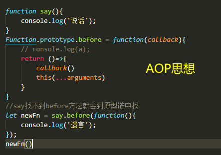
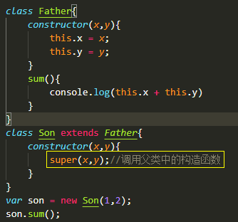
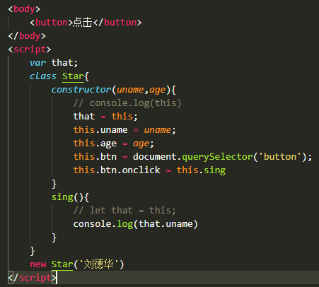

POP
面向过程编程（Process-oriented programming）
面向过程就是分析解决问题所需要的过程，然后用函数把这些步骤一步一实现，使用的时候再一个一个的依次调用就可以了
OOP
面向对象编程（Object Oriented Programming）
面向对象是把事务分解成一个个对象，然后由对象之间分工合作，面向对象的特征：封装性、继承性、多态性
AOP
面向切面编程

constructor构造函数
constructor()方法是累的构造函数（默认方法），用于传递参数，返回实例对象，
通过new命令生成对象实例时，自动调用该方法，如果没有显式定义，类内部会自动给我们创建一个constructor()
继承写法
class Son extends Father{ 子类继承父类
super关键字 ： 用于访问和调用对象父类上的函数，可以调用父类的构造函数，也可以调用父类的普通函数
继承中的属性或方法查找原则：就近原则
继承中，如果实例化子类输出一个方法，先看子类有没有这个方法，如果有就先执行子类的
如果子类中没有，就去父类中查找，如果有就执行

注意：
子类在构造函数中使用super，必须放到this前面（必须先调用父类的构造方法，在使用子类构造方法）。
在ES6中类没有变量名提升，所以必须先定义类，才能实例化对象，类里面的共有属性和方法一定要加this使用。
类里面的this的指向问题

未完待续~~~